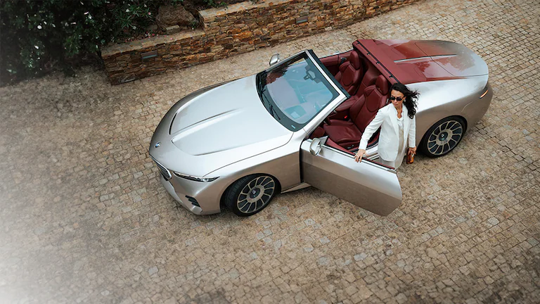

Poulain – the visionary behind the BMW Art Car
Hervé Poulain seamlessly combined art and motorsport. His vision of the BMW Art Car, created in collaboration with some of the most famous contemporary artists of all time, has given rise to legends at the 24 Hours of Le Mans.
- Home
- BMW in your country
- BMW Group Careers
- REACH Regulation
Quick Links
- BMW M
- BMW M Motorsport
- BMW Golfsport
- BMW M Driving
More BMW Websites
- About BMW.com
- Contact
- Cookies
- Imprint
BMW.com
© BMW AG 2025